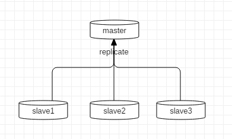
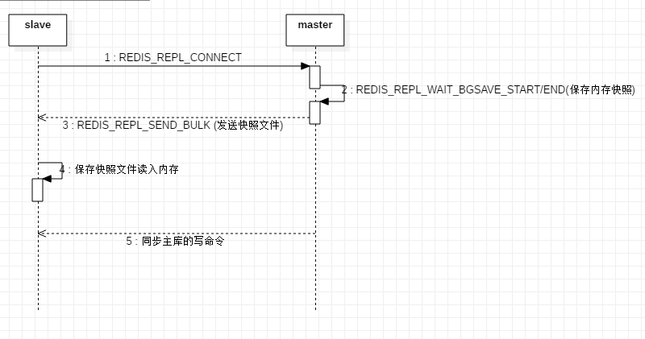
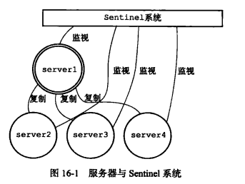
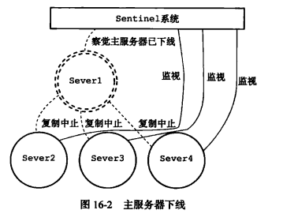
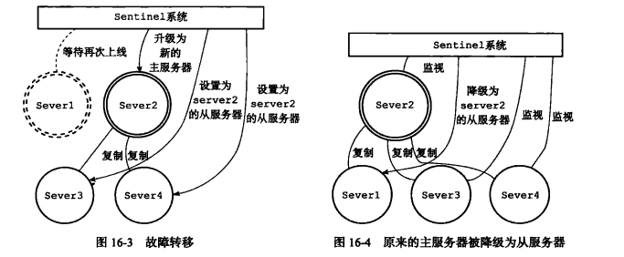
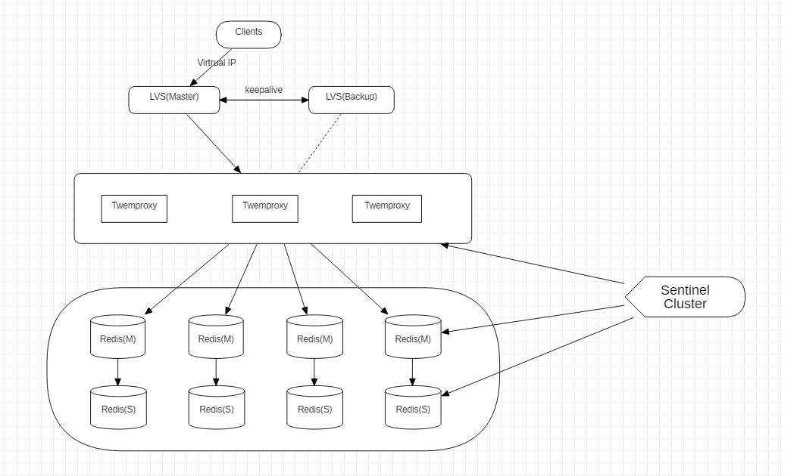

普通主从模式

Redis 的复制（replication）功能允许用户根据一个 Redis 服务器来创建任意多个该服务器的复制品，其中被复制的服务器为主服务器（master），而通过复制创建出来的服务器备份则为从服务器（slave）。 只要主从服务器之间的网络连接正常，主从服务器两者会具有相同的数据，主服务器就会一直将发生在自己身上的数据更新同步给从服务器，从而一直保证主从服务器的数据相同。

优点
能较好地避免单点故障问题，以及提出了读写分离，降低了master节点的读压力。
缺点
- 没有降低master节点的写压力；
- 没有实现高可用，当主节点挂了没办法快速选举出新的主节点；
- 每个节点都存储全量数据，浪费资源。
哨兵(Sentinel)模式
Redis-Sentinel是Redis官方推荐的高可用性(HA)解决方案。实际上这意味着你可以使用Sentinel模式创建一个可以不用人为干预而应对各种故障的Redis分布式系统。
Redis提供的sentinel（哨兵）机制，通过sentinel模式启动redis后，自动监控master/slave的运行状态，基本原理是：心跳机制+投票裁决
- 监控（Monitoring）：Sentinel 会不断地检查你的主服务器和从服务器是否运作正常。
- 提醒（Notification）：当被监控的某个 Redis 服务器出现问题时， Sentinel 可以通过 API 向管理员或者其他应用程序发送通知。
- 自动故障迁移（Automatic failover）：当一个主服务器不能正常工作时， Sentinel 会开始一次自动故障迁移操作， 它会将失效主服务器的其中一个从服务器升级为新的主服务器， 并让失效主服务器的其他从服务器改为复制新的主服务器； 当客户端试图连接失效的主服务器时， 集群也会向客户端返回新主服务器的地址， 使得集群可以使用新主服务器代替失效服务器。
故障转移过程
 

优点
- 保证分布式系统的高可用
- 实时监控各个节点的健康状态
- 自动故障迁移
缺点
- 没有解决master的写压力
- 切换主节点的过程中可能会有写数据的丢失
Twemproxy

Twemproxy 是 Twitter 开源的一个 redis 和 memcached 单线程、快速、轻量级代理服务。结构上相当于在客户端与哨兵模式之间增加了一层代理。
Twemproxy使用一致性hash支持多个Redis实例之间的自动分片，如果节点不可用，则将节点实例从系统中摘除。
优点
- 分片（sharding）逻辑对开发透明，读写方式和单个redis一致；
- 可以作为cache和storage的proxy（by auto-eject）。
缺点
- 架构复杂，层次多。包括lvs、twemproxy、redis、sentinel和其控制层程序，管理成本和硬件成本很高；
- twemproxy单节点吞吐量相比单个redis要低很多，虽然都是单进程工作模式。简单请求（请求长度<100字节），单个twemproxy节点能够达到6w的qps。 当请求长度较大时，twemproxy跑到2w的qps，进程cpu就达到了80%+。 因而对于大流量系统，需要部署几十个twemproxy节点做负载均衡。 百万级qps需要使用200+ twemproxy节点，数量接近redis数量；
- Redis层扩容能力差，需预分配足够的redis存储节点，水平扩展需要重启。
Redis-Cluster集群高可用架构

Redis Cluster不使用一致性Hash，而是使用不同形式的分片——哈希槽（Hash Slot），每个键会分布在哈希槽中。
Redis Cluster架构中，被设计成共有16384(2^14)个hash slot。每个master分得一部分slot，其算法为：hash_slot = crc16(key) mod 16384 ，这就找到对应slot。采用hash slot的算法，实际上是解决了Redis-Cluster架构下多个master节点的数据分布问题。群集至少需要3主3从，且每个实例使用不同的配置文件。
note
Redis Cluster主从架构的从节点默认不支持读写，官方不建议在此模式下进行读写分离。Redis Cluster的核心的理念主要是用slave做高可用，每个master挂一两个slave用作数据的热备，当master故障时的作为主备切换，实现高可用的。
优点
- 无中心架构；
- 数据按照哈希槽（hash slot）存储分布在多个redis实例上；
- 增加slave做standby数据副本，用于failover，使集群快速恢复；
- 实现故障auto failover，节点之间通过gossip协议交换状态信息，投票机制完成slave到master角色的提升。
- 亦可manual failover，为升级和迁移提供可操作方案。
- 降低硬件成本和运维成本，提高系统的扩展性和可用性。
缺点
- 节点会因为某些原因发生阻塞(如慢查询、阻塞式命令等导致阻塞时间大于clutser-node-timeout），被判断下线。这种failover是没有必要，sentinel也存在这种切换场景;
- 主节点failover后，主从之间容易出现数据丢失，无法保证强一致性。